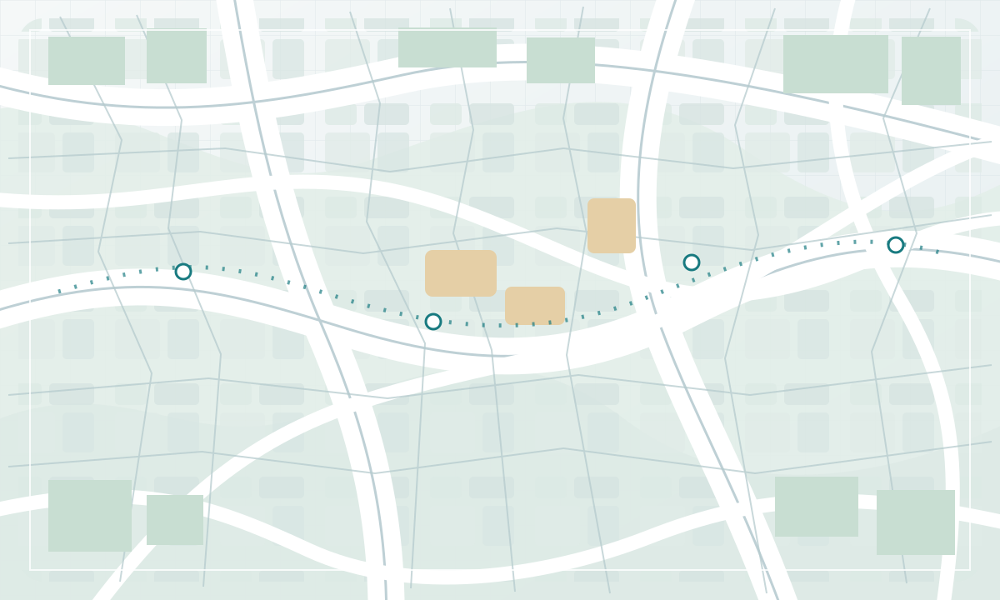

تصبغات سطحية
قد تتراكم على سطح الأسنان بسبب القهوة والشاي وبعض الأطعمة والمشروبات الداكنة أو منتجات التبغ. وقد يساعد التنظيف المهني على إزالة جزء منها بحسب طبيعتها ودرجة تراكمها.
تعرّف إلى خيارات تبييض الأسنان، وما إذا كان الإجراء مناسبًا لحالة أسنانك. يبدأ القرار بتقييم صحة الأسنان واللثة وشرح النتائج المتوقعة والتكلفة والمخاطر قبل الموافقة على الخطة.

يختلف سبب تغيّر اللون من شخص لآخر؛ فقد تكون التصبغات على سطح السن أو داخل بنيته. تحديد السبب يساعد طبيب الأسنان على شرح الخيارات الواقعية، وما إذا كان التنظيف أو التبييض قد يفيد حالتك.
قد تتراكم على سطح الأسنان بسبب القهوة والشاي وبعض الأطعمة والمشروبات الداكنة أو منتجات التبغ. وقد يساعد التنظيف المهني على إزالة جزء منها بحسب طبيعتها ودرجة تراكمها.
قد يرتبط بالعمر أو بعوامل أثّرت في تكوّن الأسنان أو بإصابة سابقة. وقد تختلف استجابته عن التصبغات السطحية؛ لذلك لا يمكن تحديد الطريقة أو النتيجة المتوقعة من دون تقييم طبيب الأسنان.
تبدأ الرحلة بفحص الأسنان واللثة وفهم سبب تغيّر اللون، ثم مناقشة البدائل والتكلفة والنتائج المتوقعة قبل الموافقة على الخطة.
يستمع الطبيب إلى ملاحظاتك وتاريخك الصحي، ويفحص الأسنان واللثة، ويبحث عن سبب تغيّر اللون، مع الانتباه إلى الألم أو الحساسية والترميمات الموجودة.
يشرح الطبيب الخيارات التي قد تناسب حالتك، وما يمكن أن تحققه وما لا تغيّره، والآثار المحتملة والتكلفة والنتيجة الواقعية.
يوضح الطبيب التوصية وخطواتها وتكلفتها وبدائلها. لا يبدأ الإجراء إلا بعد أن تفهم الخطة وتوافق عليها.
اتبع تعليمات العناية الخاصة بخطتك، ولا تكرر التبييض من نفسك. اطلب المشورة إذا كانت الحساسية شديدة أو مستمرة أو ظهر تهيّج في اللثة.
لا توجد طريقة واحدة تناسب الجميع. قبل التبييض، يحتاج طبيب الأسنان إلى فحص الأسنان واللثة ومراجعة أي ألم أو حساسية أو تشققات أو حشوات أو تيجان. يساعد هذا التقييم على تحديد ما إذا كان الإجراء مناسبًا، وما إذا كان ينبغي علاج مشكلة أخرى أولًا.
من المهم معرفة ما يمكن للتبييض تغييره وما لا يمكنه تغييره، وفهم آثاره المحتملة قبل اتخاذ القرار. ناقش توقعاتك مع طبيب الأسنان حتى تكون النتيجة المتوقعة واقعية.
تختلف الاستجابة باختلاف اللون الأصلي للأسنان وسبب التصبغ وعمقه والطريقة المستخدمة. لذلك لا يمكن ضمان درجة لون محددة أو نتيجة متطابقة للجميع.
قد يسبب التبييض حساسية مؤقتة في الأسنان أو تهيّجًا في اللثة، خاصة إذا لامست مادة التبييض أنسجة اللثة. أخبر الطبيب إذا شعرت بألم أو تهيّج، واطلب المشورة إذا كانت الأعراض شديدة أو مستمرة.
مواد الحشوات والتيجان والقشور لا تستجيب للتبييض مثل الأسنان الطبيعية. وقد يظهر تفاوت في اللون بعد التبييض؛ لذلك أخبر الطبيب بأي ترميمات موجودة قبل اختيار الخطة.
التزم بتعليمات العناية التي يحددها طبيبك، وحافظ على تنظيف الأسنان واللثة. قد تتغير درجة اللون مع الوقت؛ اسأله قبل تكرار التبييض أو استخدام منتج إضافي، واطلب المشورة إذا كانت الحساسية شديدة أو استمرت أو ظهر تهيّج في اللثة.
قبل بدء التبييض، تحقّق من ترخيص طبيب الأسنان وتخصصه، واسأله عن خبرته في طرق التبييض المختلفة وكيف يقيّم مدى ملاءمة الإجراء لحالتك.
من حقك أن تسأل عن الترخيص والتخصص وخبرة الطبيب في الإجراء، وأن تفهم الخطة والنتائج المتوقعة قبل الموافقة على العلاج.
تحقّق من ترخيص مزاولة المهنة والتخصص لدى الجهة الرسمية المختصة قبل بدء العلاج.
اسأل عن خبرة الطبيب في طرق التبييض المختلفة، وكيف يحدد الخيار الملائم لحالة أسنانك.
تأكد من شرح النتائج الممكنة والآثار المحتملة وتعليمات العناية بعد الإجراء.
تُعرض هنا تجارب المرضى بعد التحقق من مصدرها والحصول على موافقتهم، مع نقل مضمون كل تجربة بأمانة واحترام خصوصية صاحبها.
تُدرج هنا تجربة مريض حقيقية تتناول وضوح شرح خيارات التبييض والخطة العلاجية قبل اتخاذ القرار.
تُضاف هنا تجربة فعلية تعبّر عن تعامل الفريق مع أسئلة المريض واهتمامه براحة المريض أثناء الزيارة.
يُدرج هنا رأي مريض موثّق عن تعليمات العناية بعد التبييض ووضوح المتابعة عند الحاجة.
قبل التوجه إلى عيادة الأسنان، تأكد من العنوان الدقيق وساعات العمل عبر قنواتها الرسمية، واحفظ موقع الفرع لتسهيل الوصول.

الرياض · المملكة العربية السعوديةيُدرج العنوان الكامل واسم الحي والفرع قبل النشر.
يُضاف جدول الدوام الرسمي وأيام العمل والإجازات.
يُربط موقع الفرع مباشرةً، مع رقم الهاتف وواتساب الرسميين.
إجابات مبسطة عن عدد الجلسات، والنتيجة، والحساسية، والملاءمة. تبقى التوصية المناسبة مرتبطة بفحص الأسنان واللثة لدى طبيب الأسنان.
مراجع تثقيفية: إرشادات NHS حول تبييض الأسنان وملاءمته، ومعلومات الجمعية الأمريكية لطب الأسنان عن تبييض الأسنان وآثاره، ودليل الجمعية الأمريكية لطب الأسنان حول منتجات التبييض، ودليل مستشفى Leeds NHS حول تبييض الأسنان. هذه الصفحة توعوية ولا تغني عن التقييم السريري.
اسأل عن مدى ملاءمة التبييض لحالتك، والخيارات المتاحة، والنتائج الواقعية، والمخاطر والتكلفة الإجمالية قبل الموافقة على أي إجراء.
هذه نسخة عرض تجريبية غير مرتبطة بعيادة أو قنوات حجز فعلية؛ لن يُرسل طلب ولن يُنشأ موعد قبل ربط أرقام المنشأة الرسمية.